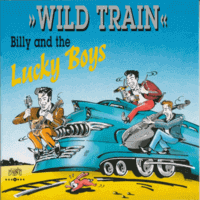

Billy and the Lucky Boys - Wild Train (Album, 1993)
01 - Cut Across Shorty (1:47)
02 - First Love (3:22)
03 - Honey (2:02)
04 - Lonely One (1:24)
05 - Motorbike Boogy (3:18)
06 - My Little Baby (3:09)
07 - Never Let Me Go (2:07)
08 - Ring Of Fire (2:36)
09 - Rockhouse (2:05)
10 - Sandy Girl (1:51)
11 - She's All Right (1:47)
12 - Teenager In Love (2:44)
13 - Wild Train (2:23)
14 - You And Me (1:47)
© Part Records :: [CD 605.001]
Notes
Germany.
My experience is based on its Digital release (2009). Original CD and LP were with much more interesting order of tracklist
reference information: Discogs®
Review
318/366 (Project 366)
Such a rather pleasant combination of a convivial acoustic sound with the rugged energy of rockin' music and poppy vocal songs. Rockabilly doowop with Rock'n'Roll vocal harmonies, where the core is perhaps not Teen Pop. But something raw and with madly fun. It may resemble the Jets, the Firebirds, and some tracks also have a brass instruments section. The album is pretty solid. But I can single out two cover songs - "Teenager In Love" and "Ring Of Fire". I liked them the most.